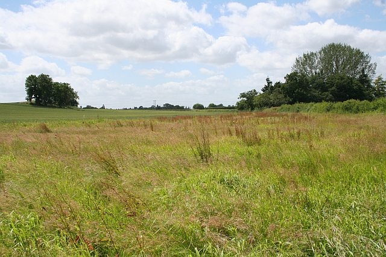

-
Land : refers to all natural resources used to produce goods and services.
This includes not only the physical land itself but also anything that comes from the land.
Examples:
Agricultural land for farming,
Forests for timber,
Mineral deposits like coal, oil, and gold,
Water resources for hydroelectric power or irrigation,
Fishing areas and wildlife.
IMPORTANCE OF LAND
-
Resource Provision : Land provides essential natural resources like minerals, water, and timber, which are crucial for various industries.
-
Agriculture : Land is fundamental for agriculture, which is a primary source of food and raw materials.
-
Economic Base : Natural resources from land can form the economic base of a country, especially those rich in minerals and energy resources.
-
Environmental Balance : Proper use of land resources is crucial for maintaining ecological balance and sustainability.
-
Labour : represents the human effort, both physical and mental, used in the production process. It includes the work done by people to produce goods and services.
Examples :
Factory workers assembling products,
Teachers providing education,
Doctors offering medical services,
Software developers writing code,
Farmers cultivating crops.
IMPORTANCE OF LABOUR
-
Production Capability: Labor is necessary for the production process, converting raw materials into finished products and services.
-
Economic Growth: A skilled and efficient labor force contributes significantly to economic growth and development.
-
Innovation and Creativity : Human labor is the source of innovation and creativity, leading to new products, services, and technological advancements.
-
Income Generation : Labor provides individuals with income, which in turn drives consumption and economic activity.
-
Capital : Capital encompasses man-made resources used in production. It includes tools, machinery, buildings, and technology that assist in creating goods and services.
Examples: Machinery and equipment in factories,Vehicles used for transportation and logistics,
Infrastructure like roads, bridges, and airports etc.
IMPORTANCE OF CAPITAL
-
Production Efficiency : Capital increases production efficiency by enabling more output with less effort through machinery and technology.
-
Technological Advancement : Investment in capital leads to technological advancements, boosting productivity and economic growth.
-
Infrastructure Development : Capital investment is essential for developing infrastructure like roads, bridges, and buildings, which are critical for economic activities.
-
Expansion Potential : Adequate capital allows businesses to expand, enter new markets, and improve competitiveness.
-
Entrepreneurship : Entrepreneurship involves the ability to organize the other factors of production (land, labor, and capital) to produce goods and services.
It includes taking risks, innovating, and making business decisions etc.
Examples :
Business founders and owners,
Startup innovators developing new products,
Managers and executives making strategic decisions,
Investors funding new ventures etc.